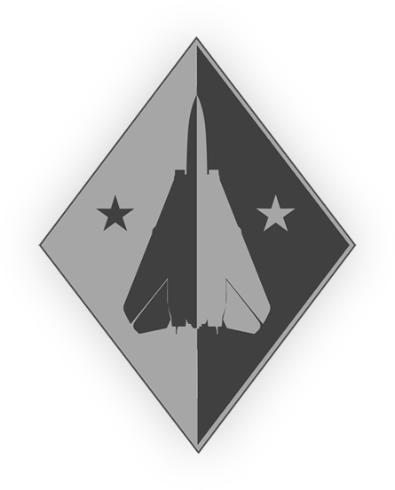

DCS: F-14 “雄猫” 中文飞行手册
内容：
简介
驾驶舱简介
总体设计和系统概述
武器系统和武器使用总览
正常程序
应急处置程序
DCS 特定功能
首字母缩写和简称
教学视频
Jester AI指令菜单
中文本地化：
关于本项目
中文本地化制作
本地化更新日志
Heatblur DCS:F-14A/B 开发更新文章
下载：
相关本地化文件下载
DCS: F-14 “雄猫” 中文飞行手册
»
Heatblur DCS F-14 “雄猫”
下一页
Heatblur DCS F-14 “雄猫”
¶
手册上次更新时间：
2021年11月20日
相关本地化文件更新时间：
2021年05月21日

内容：
简介
历史背景
F-14 “雄猫”
服役升级
对地攻击
F-14D
退役
伊朗
AIM-54“不死鸟”
一般规格
技术资料
DCS 中模拟的 F-14 型号
F-14A-95-GR IRIAF - 尚未实装
F-14A-135-GR（早期） - 尚未实装
F-14A-135-GR （后期型）
F-14B
驾驶舱简介
F-14 驾驶舱布局
飞行员驾驶舱布局
雷达拦截官驾驶舱布局
F-14 飞行员驾驶舱
左侧控制台
左侧垂直控制台
左膝仪表板
左仪表板
风挡左边框
中央仪表板
风挡右边框
右仪表板
右膝仪表板
右垂直控制台
右侧控制台
座舱盖控制手柄
F-14 雷达拦截官驾驶舱
左侧控制台
左侧垂直控制台
左仪表板
中央仪表板
中央控制台
左右脚部空间
右仪表板
右膝仪表板
右垂直控制台
右侧控制台
座舱盖控制手柄
总体设计和系统概述
发动机和油门控制器
油门控制器
发动机和油门控制开关以及指示器
燃油系统
燃油量指示器和控制
失火探测和灭火系统
失火探测系统
灭火系统
失火探测和灭火系统测试
电气系统
应急电力
控制开关/按钮和指示器
断路器
液压系统
控制开关/按钮和指示器
机翼后掠系统
应急模式
控制开关/按钮和指示器
飞行控制系统
配平
AFCS 自动飞行控制系统
扰流板
襟翼和缝翼
减速板
起落架系统
前轮转向
机轮刹车
弹射起飞和拦阻装置
前轮弹射起飞系统
拦阻装置
环境控制系统（ECS）
气源和驾驶舱引气控制
风挡加温和除雾
AN/AWG-9 和 AIM-54 冷却
外部 ECS 气源
供氧系统
飞行仪表
座舱盖
弹射系统
照明系统
机内照明
机外照明
抛弃系统
中央大气数据计算机（CADC）
AN/AWG-9 武器控制系统（WCS）
详细数据显示器（DDD）及控制面板
战术信息显示器（TID）与相关控制开关/按钮
手控装置（HCU）
计算机位址面板（CAP）
传感器控制面板
AN/AWG-9雷达
AN/APX-76 IFF 问询器
电视摄像套件（TCS）
TCS 控制和标识
TCS 操作
LANTIRN
描述
控制和显示
操作
AN/ALR-67 雷达告警接收机（RWR）
描述
控制
显示
告警灯
威胁提示警告音
BIT
威胁符号
AN/ALE-39 对抗弹射套件
控制和运作
LAU-138
AN/ALQ-100 和 126 DECM （防御性电子对抗）
DECM 控制开关/按钮和指示器
导航
导航系统
惯性导航系统（INS）
INS 对准模式
导航控制和显示器
导航更新
姿态航向基准系统（AHRS）
TACAN 系统（AN/ARN-84）
方位距离航向指示器（BDHI）
雷达高度计系统（AN/APN-194）
导航系统组成
通信系统
天线
ICS - 机内通话系统
音频警告信号
飞行员音量 / TACAN 指令面板
RIO 通信/ TACAN 指令面板
AN/ARC-159（UHF 1）无线电台
AN/ARC-182 (V/UHF 2) 无线电台
UHF 1 和 V/UHF 2 中读取（保存）预设波道
AN/ARC-182 BIT（机内自检）
AN/ARC-159 和 AN/ARC-182 远程显示器
AN/ARA-50 UHF 自动测向仪
TSEC/KY-28 保密话音设备
KY-28 操作
Link 4A & C 数据链路
武器系统和武器使用总览
M-61“火神”六管加特林航炮
空对空武器
空对空导弹的 HUD 标识
AIM-7“麻雀”导弹
AIM-9“响尾蛇”导弹
AIM-54“不死鸟”导弹
空对地武器
空对地武器设定
空对地武器投放
Mk-81、Mk-82、Mk-83 和 Mk-84 通用航空炸弹
GBU-10、GBU-12、GBU-16 和 GBU-24 激光制导炸弹
Mk-20“石眼”炸弹
“祖尼”火箭弹
BDU-33 训练弹
特种弹药
ADM-141 TALD（战术空射诱饵）
LUU-2 降落伞照明弹
拉烟吊舱
其他吊舱和副油箱
LAU-138 箔条适配器
TACTS 吊舱
FPU-1 油箱
LANTIRN 吊舱
CNU-188 外挂行李舱
F-14 挂载示意图
正常程序
检查单 -飞行员
机内检查
启动前
发动机启动
启动后
检查单 - RIO
机内检查
启动前
发动机启动
启动后
应急处置程序
发动机空中启动
脱机自转空中启动
交叉引气空中启动
风车空中启动
DCS 特定功能
Jester
功能
Iceman
协助启动
DCS F-14 专用设置选项
Heatblur DCS F-14 任务编辑器相关功能
Heatblur DCS F-14 任务编辑器专用选项
任务编辑器 F-14 航路点选项
首字母缩写和简称
A
B
C
D
E
F
G
H
I
J
K
L
M
N
O
P
Q
R
S
T
U
V
W
Y
教学视频
飞行员驾驶舱简介
RIO 驾驶舱简介
飞行员冷启动
前座 - 冷启动，滑行，起飞与Jester（简短教程）
后座 - RIO冷启动（4种方式）
机动和飞行特性
空中加油
前座 - ACM - 雷达搜索模式
后座 - RIO NAV GRID教程
后座 - RIO AWG-9教程
后座 - RIO IFF教程
CVW-11：DCS F-14B雄猫RIO学院
前座 - 武器 - AIM-9响尾蛇
前座 - 武器 - 阻尼火箭与Jester设置
Jester AI指令菜单